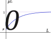
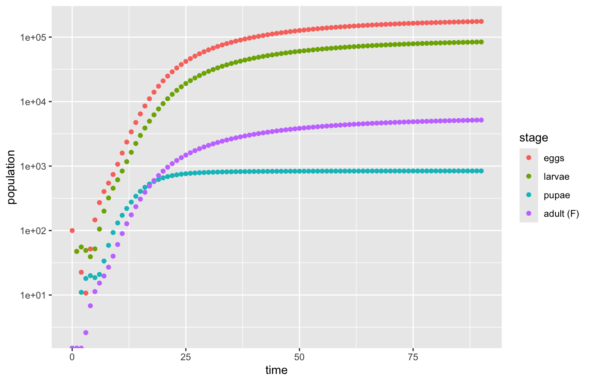

Section3.4Density Dependence in Structured Populations
In our analysis of the mosquito population using a structured model, like all linear projection models, the dynamics eventually resulted in either exponential growth or exponential decay. Just as with simple populations, exponential growth is not a valid model for structured populations when the population becomes larger than the environment is capable of supporting. There must be a change to the model when the population starts to become sufficiently large.
For the mosquito population, one possible bottleneck is the water where larvae develop. As more larvae grow in the fixed number of open water sources, they will compete for food and space. There may also be limited space for female mosquitoes to deposit their eggs. Even beyond these considerations, a high mosquito population might also attract predators that might put additional pressure on the population.
Subsection3.4.1Model Development
We will choose just one pressure point on the population and add density-dependence in the model at the larva stage. Specifically, we could consider the mortality rate for larvae to be an increasing function of the number of larvae present. A mortality rate in this context is a probability and so is constrained to be between 0 and 1. We will introduce a mortality function \(\mu_L\) that is an increasing function of \(L\) with a horizontal asymptote \(\mu_L \to 1\) as \(L \to \infty\text{.}\) Graphically, we want a function that looks something like the graph in Figure 3.4.1.

Figure3.4.1.Graph of a prototypical density-dependent mortality probability.
From calculus, we know that a function of the form
will have a horizontal asymptote \(f(x) \to 1\) as \(x \to \infty\text{.}\) We also know that \(f(0) = a\text{.}\) Calculating \(f'(x)\text{,}\) we find
so that \(f'(0) = b(1-a)\text{.}\) By choosing appropriate values for \(a\) and \(b\text{,}\) we can therefore make our graph match an initial mortality rate \(\mu_0\) and for small values of \(L\) have additional mortality that is proportional to \(L\) (density-dependence) with proportionality constant \(k\) (slope) by choosing \(a = \mu_0\) and \(b = \frac{k}{1-\mu_0}\text{.}\)
Using this mortality rate for larvae, and the uniform reproductive rate for adults, we obtain a modified density-dependent mosquito model. Because the larvae mortality rate in (3.3.2) and (3.3.3) always appeared as \(1-\mu_L\text{,}\) we will rewrite this first. We now know that \(\mu_L\) is a function of \(L\) with
Because we have introduced density dependence, the model is no longer a linear model. That is, there is at least one projection equation that is not just a linear combination of the state variables. The analysis that we did previously works well for small mosquito populations when \(\mu_L \approx \mu_0\text{,}\) but as the population gets larger, the density dependence slows the exponential growth and we might approach an equilibrium.
We can explore this initially using simulation. We will use the same parameters as in the previous section, with the exception that we need to introduce our density dependent parameter \(k\text{,}\) representing the increase in larvae mortality per individual in the population. In our earlier simulation, we used \(\mu_L = 0.05\) as an arbitrarily chosen value to reflect some environmental daily loss of larvae. Suppose we want our model to increase mortality to \(\mu_L = 0.10\) if the larvae population in the water reaches \(L=100\text{.}\) This represents and increase of \(\Delta \mu_L = 0.05\) for a change \(\Delta L = 100\text{,}\) so our parameter \(k = \frac{\Delta \mu_L}{\Delta L} = \frac{0.05}{100} = 0.0005\text{.}\)
# Life cycle parameters
T_egg <- 2
T_larva <- 4
T_pupa <- 2
T_adult <- 28
N_egg <- 100
# Model parameters
# E,L,P mortality probabilities are arbitrarily set -- not based on life cycle
m_E <- 0.05
m_L0 <- 0.05
k <- 0.0005 # density dependent increase in mortality
m_P <- 0.05
p_E <- 1/T_egg
p_L <- 1/T_larva
p_P <- 1/T_pupa
e_A <- 1/T_adult
# Create space for data and fill with 0
maxT <- 90
t_seq <- 0:maxT
E_seq <- double(maxT+1)
L_seq <- double(maxT+1)
P_seq <- double(maxT+1)
A_seq <- double(maxT+1)
# Initial values -- only eggs nonzero
E_seq[1] <- N_egg
# Now perform the projections
for (t in 1:maxT) {
E_seq[t+1] <- (1-m_E) * (1-p_E) * E_seq[t] + (5 * N_egg)/T_adult * A_seq[t]
L_seq[t+1] <- (1-m_E) * p_E * E_seq[t] +
(1-m_L0)^2 * (1-p_L) * L_seq[t] / (k * L_seq[t] + 1 - m_L0)
P_seq[t+1] <- (1-m_L0)^2 * p_L * L_seq[t] / (k * L_seq[t] + 1 - m_L0) +
(1-m_P) * (1-p_P) * P_seq[t]
A_seq[t+1] <- 0.5 * (1-m_P) * p_P * P_seq[t] + (1-e_A) * A_seq[t]
}
# Visualize dynamics --- expect exponential growth so use log-scale
library(ggplot2)
pop_growth <- ggplot() +
# Add data; use color to label the different stages
geom_point(mapping = aes(x = t_seq, y = E_seq, color = "1")) +
geom_point(mapping = aes(x = t_seq, y = L_seq, color = "2")) +
geom_point(mapping = aes(x = t_seq, y = P_seq, color = "3")) +
geom_point(mapping = aes(x = t_seq, y = A_seq, color = "4")) +
# Add legend information
scale_color_discrete(breaks=c("1", "2", "3", "4"),
labels = c("eggs","larvae","pupae","adult (F)"),
name="stage") +
# Add logarithimc scale
scale_y_continuous(trans = "log10") +
# Add labels
labs(x = "time", y = "population")
show(pop_growth)
Listing3.4.2.

Figure3.4.3.Population values predicted by the density-dependent ELPA model
We can see that the mosquito population starts out like it will grow exponentially, but after only a few days the population values start to level out. Our population is converging toward an equilibrium. By inspecting the final recorded values for each of the state variables, we can see that our simulation has not quite reached equilibrium for \(t=90\text{.}\) Increasing our final time value to \(t=100\text{,}\) we still have not reached equilibrium (values are still changing), but we can see we are close with values \((E,L,P,A) = (190157, 91646, 842, 5591)\text{.}\) To find actual equilibrium values, we need to do some analysis.
Subsection3.4.3Finding Fixed Points for Structured Populations
Recall that for a single sequence with projection function \(P_{n+1} = f(P_n)\text{,}\) we find a fixed point by solving the equation \(x = f(x)\text{.}\) When working with structured populations, we need all of the projection equations to be at an equilibrium. That is, we need to find values \((E,L,P,A)\) so that \(E_{t+1} = E_t = E\text{,}\)\(L_{t+1}=L_{t} = L\text{,}\)\(P_{t+1} = P_t = P\) and \(A_{t+1} = A_{t} = A\text{.}\)
We will need to solve four equations involving four variables at the same time. In an abstract sense, if we thought of our four projection formulas as four different projection functions that depend on the full state of the population,
then we are trying to solve the following four equations simultaneously,
\begin{align*}
E \amp = f_E(E, L, P, A) \\
L \amp = f_L(E, L, P, A) \\
P \amp = f_P(E, L, P, A) \\
A \amp = f_A(E, L, P, A)
\end{align*}
Rather than work through the mathematical theory for how to do this solving of equations by hand, we will let a computer algebra system do the work for us (if possible). An example of how we would try to do this using Sage is illustrated below. If we want symbolic solutions, we need to declare every parameter as a symbol. This often slows the computation down or might even make it so the algebra system can’t find the answer. Instead, we can declare the values directly and then solve. Only the second method is illustrated here.
There are two equilibria or fixed point states. A total absence of mosquitoes is one of the solutions, \((E,L,P,A)=(0,0,0,0)\text{.}\) The second equilbrium state is what our simulation was approaching,
Our simulation gives us strong reason to believe that the second fixed point is stable while the fixed point with no mosquitoes is unstable.
Subsection3.4.4Partial Derivatives
Recall that for simple projection models, \(P_{n+1} = f(P_n)\text{,}\) where \(P=P^*\) is a fixed point, we tested the local stability of the fixed point by looking at the value of the slope \(\lambda = f'(P^*)\text{.}\) For structured populations, we will do a similar thing. However, in this case, there are more functions and more variables. We will be creating a matrix full of derivatives of each of the functions with respect to each of the variables. In place of the single slope to determine stability, we will be looking at the dominant eigenvalue of this matrix.
We first need to introduce the idea of a partial derivative. When a function is defined involving multiple variables, such as \(f(x,y)\text{,}\) a partial derivative gives us the rate of change of this function when only one of the variables is changed. We can not use the prime notation, as in \(f'\) because that doesn’t tell us which variable was changed. Instead, we use a subscript indicating the variable, so that \(f_x(x,y)\) represents the rate of change when \(x\) is changing and \(f_y(x,y)\) represents the rate of change when \(y\) is changing. The derivative operator in calculus \(\frac{d}{dx}\) is also updated to use curly “d” to indicate we are holding other variables constant so that we have \(\frac{\partial}{\partial x}\) and \(\frac{\partial}{\partial y}\text{.}\) These are also sometimes abbreviated as operators to also involve subscripts \(\partial_x\) and \(\partial_y\text{.}\)
Example3.4.4.
If \(f(x,y) = 2x^2 - 3xy + 4y^2 +3y\text{,}\) find \(f_x(x,y)\) and \(f_y(x,y)\text{.}\)
Solution.
The partial derivative \(\frac{\partial}{\partial x}\) finds the derivative treating \(x\) as the variable and \(y\) as if it were constant. Whenever a term has just \(y\text{,}\) that entire term is treated as if it were constant. And if a term has a formula involving \(y\) as a factor, that entire factor is treated like a constant multiple. Consequently,
The partial derivative \(\frac{\partial}{\partial y}\) does the reverse—we treat \(y\) as the variable and any term involving \(x\) as if that were a constant. Thus,
We can use a computer algebra system to perform the derivatives by specifying the variable of differentiation.
Our abstract setup for the matrix of derivatives presumes that have state variables ordered \((x_1,x_2,\ldots,x_n)\text{.}\) Each state variable has its own projection function involving potentially any of the state variables,
For each function \(f_i\text{,}\) we will compute all of the partial derivatives with respect to \(x_1\text{,}\)\(x_2\text{,}\) etc., one at a time, and put them in the \(i\)th row of a matrix. This matrix full of partial derivatives is named the Jacobian matrix, or more simply the derivative matrix. The order is critical in that the first column will have all of the partial derivatives with respect to \(x_1\text{,}\) the second column will have all of the partial derivatives with respect to \(x_2\text{,}\) and so on. I prefer the notation \(Df\) for the derivative matrix.
Example3.4.5.
Suppose we started with a projection model for \((S,P)\) given by recursive formulas
This model could represent a simplified density-dependent seed-bank annual plant model. The parameter \(\alpha\) represents the fraction of seeds from the seed bank that germinate while \(\rho\) represents the fraction of non-germinating seeds that will survive to the next year. Plants are modeled with density dependence so that the number of seeds per plant starts at \(f\) but decreases with increasing population sizes using the per plant seed model \(\frac{f}{\beta P_t + 1}\text{.}\)
Having specified an order for the state variables of \((S,P)\text{,}\) we can define the two projection functions
\begin{align*}
f_{1}(S,P) \amp = \rho (1-\alpha) S + \frac{f P}{\beta P + 1} \\
f_{2}(S,P) \amp = \alpha S \text{.}
\end{align*}
We can compute the partial derivatives, following the same order of first \(S\) and then \(P\text{:}\)
The Jacobian or derivative matrix is found by putting the partial derivatives of \(f_1\) in the first row and the partial derivatives of \(f_2\) in the second row.
Notice that this formula still depends on the value of \(P\text{.}\) This is because our original function \(f_1(S,P)\) was nonlinear with respect to \(P\text{.}\)
This example focused only on finding the Jacobian matrix. We would need to calculate fixed points and then evaluate this matrix using the fixed point state values before proceeding further.
A computer algebra system can automate this process for us. To do this, we must have a way to inform the system of the ordering for the variables as well as for the projection functions. A possible approach using Sage is provided below, using the previous example involving \((S,P)\text{.}\) To modify this, you only need to update the names of the state variables and paramters, define your projection functions, and then update the state_vars and projections lists to match order.
Subsection3.4.5Testing the Stability of a Fixed Point
To test the local stability of a fixed point in a structured population, we take advantage of the following theorem.
Theorem3.4.6.
Suppose a discrete-time system has a state vector \(\vec x = (x_1, x_2, \ldots, x_n)\) governed by \(n\) projection functions
Calculate the Jacobian matrix \(Df\) evaluated at \(\vec x^*\) and then find the dominant eigenvalue of that matrix \(\lambda\text{.}\)
If \(|\lambda| \gt 1\text{,}\) then \(\vec x=\vec x^*\) is locally unstable.
If \(|\lambda| \lt 1\text{,}\) then \(\vec x=\vec x^*\) is locally stable.
If \(|\lambda| = 1\text{,}\) the test is inconclusive.
Since we are already using the computer algebra system Sage to generate our matrix and find our fixed points, we might as well also ask this system to calculate our eigenvalues. Because Sage is designed to accommodate many mathematical subtleties, the command is slightly more complex than the eigen command in R. We will illustrate the analysis for our simple seed model introduced above.
we will use Sage to find the fixed points and calculate the Jacobian matrix using the fixed point solutions. Suppose that we are working with parameter values \(\rho = 0.5\) (50% survival of seeds to next year), \(\alpha = 0.6\) (60% germination rate each year), \(f = 10\) (100 seeds per plant in ideal conditions), and \(\beta = 0.01\) (controls how fast density dependence impacts the seed production). We borrow the derivative code from the earlier Sage calculation and add in the calculation of the fixed points.
When evaluating the Sage code, we discover that there are two fixed point solutions. The first fixed point listed is \((S,P) = (\frac{3250}{3}, 650)\text{.}\) The Jacobian matrix at this fixed point is given by
Finally, Sage reports the eigenvalues as \(\lambda_1 = 0.441565\) and \(\lambda_2 = -0.241565\text{.}\) The dominant eigenvalue is the eigenvalue with largest magnitude \(\lambda = 0.441565\text{.}\) Since this eigenvalue has magnitude smaller than 1, the fixed point is stable.
The second fixed point is \((S,P) = (0,0)\text{.}\) The Jacobian matrix at this fixed point is given by
and Sage reports the eigenvalues as \(\lambda_1 = 2.55153\) and \(\lambda_2 = -2.35153\text{.}\) Because the dominant eigenvalue, \(\lambda = 2.55153\text{,}\) has magnitude greater than 1, the fixed point is unstable.